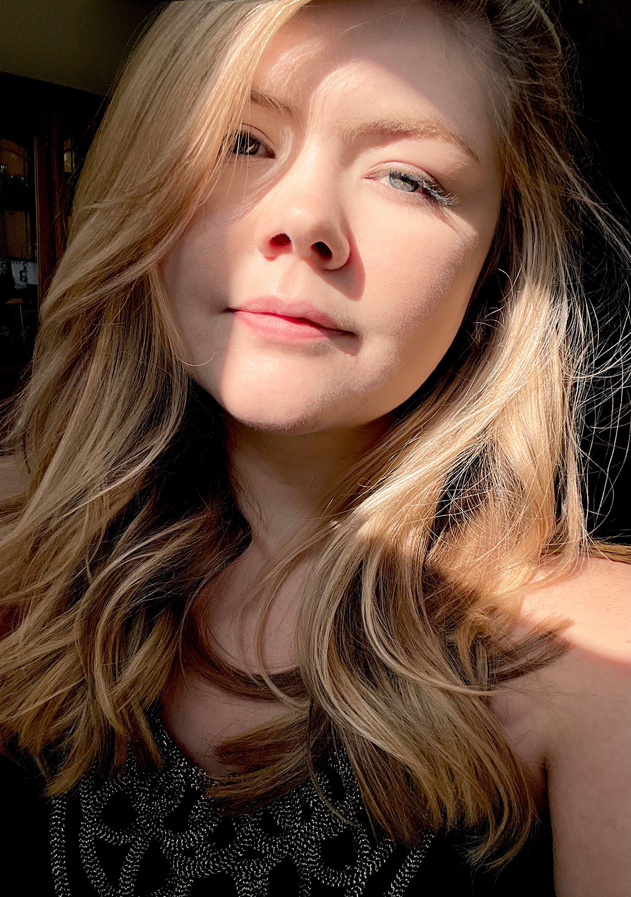

By day, I'm Laura Kane, a web design student in RVA with a background in traditional and digital art. My favorite part of the web design process is, well, designing! I have an eye for color and typography, and I love the problem-solving aspect of putting it all together for a positive user experience. For a full list of my skills, visit my contact page, where my resume is available for download!
By night, I'm Laura, lover of cats, video games, and the TV comedy, New Girl. When I'm not working, I'm usually playing games like Stardew Valley or Minecraft. My Siamese cat usually has lots to say about how I'm doing things! If you can't already tell, I'm quite an introvert, but I enjoy spending time with people I love.
